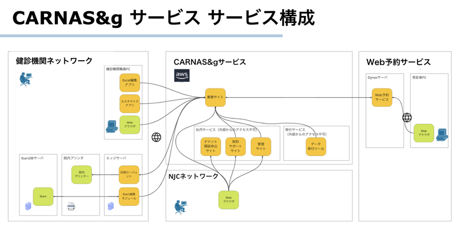
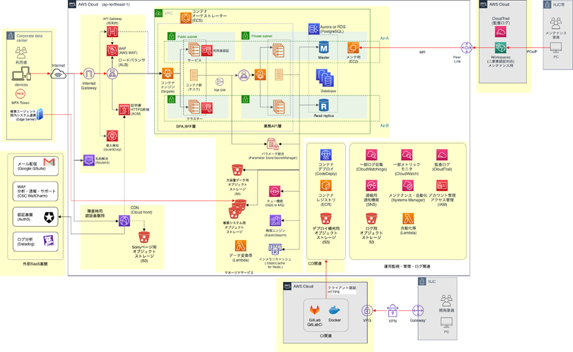

01.運用設計方針¶
1.1 サービス運用設計方針
以下の医療ガイドラインに従ってサービス構築と運用を実施する。
医療情報システムの安全管理に関するガイドライン 第6.0版（厚生労働省）
医療情報を取り扱う情報システム・サービスの提供事業者における安全管理ガイドライン（経済産業省・総務省）
運用においては、以下の役割分担とする。
CARNAS &g業務運用 |
「業務運用」 |
インフラ基盤運用 |
「基盤運用」 |
1.1.1 継続的なDevOpsサイクルの実施
ガイドラインに対する適用範囲の見直し／検討とセキュリティリスクの分析、各部署の情報交換を継続的に実施する。
1.1.2 対象範囲
環境 |
対象範囲 |
CARNAS&g サービス |
AWSサービス |
業務サイト |
|
テナント開設申込サイト |
|
契約サポートサイト |
|
管理サイト（GoogleAnalyticsも含む） |
|
Web予約サービス |
Web予約サービス |
健診機関ネットワーク |
エッジサーバ |
経路上の中継ポイント |
|
クライアントPC（Excel編集アプリ） |
|
連携システム（医事DB） |
|
外部Saasサービス |
認証サービス（Auth0） |
メール配信サービス（SendGrid） |
|
モニタリングサービス（Datadog） |
|
WAF（WAFCharm) |
|
社内サービス |
構成管理（GitLab） |
1.2 サービス設計方針
1.2.1 サービス構成
本サービスは、各AWSサービスを使って以下のCARNAS &gとしてのサービスを提供する。
1.2.2 アーキテクチャ構成
CARNASアーキテクチャ構成を以下に示す。
1.2.3 冗長化構成について
原則長時間のサービス停止を回避するため完全冗長構成／自動フェイルオーバーを行い、シングル障害ポイントを作らないようにする。完全冗長構成については、基本的に利用するAWSマネージドサービス側で自動冗長化を行う事で耐久性が保証されるが、RDS、ECSに対しては手動での冗長化を必要とする。尚、万一シングル障害ポイントが必要な場合は自立復旧する仕組み(単体フェールオーバー)を実装することとする。